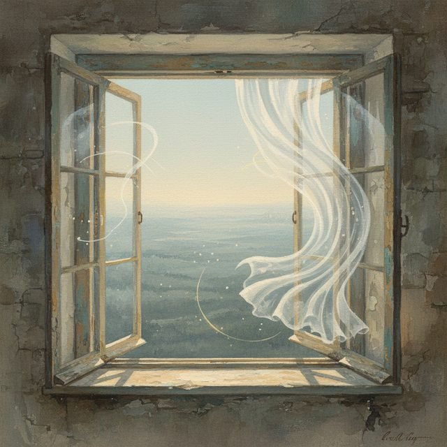

CH02-052 — images
【沈黙の防衛】意見を言えないとき脳で何が起きているか
ep
CH02
Script Viewer
snapshot
guide
script
audio
thumb
images
CH02-052
images
updated_at: 2026-01-12T10:15:07.743046Z
run_id:
CH02-052_mix433_20260106
CH02-052
会議や食事での沈黙／意見を言う怖さのテーマ
CH02-052
否定される恐怖
CH02-052
意見は試作品
CH02-052
批判を受け止める
CH02-052
発言の場所を選ぶ／短く具体的に伝える
CH02-052
柔らかい前置きの使い方
CH02-052
完璧を目指さない
CH02-052
体の緊張をほぐす
CH02-052
相手を敵と見ない／後悔の想像を確認する
CH02-052
聞く力を高める
CH02-052
公共性の誕生／支配の弱め方
CH02-052
声の方向を意識する
CH02-052
書くことの練習
CH02-052
小さな成功体験の積み重ね
CH02-052
感情を整理する
CH02-052
関係のメンテナンス
CH02-052
意見が通らないときの受け止め
CH02-052
怖さとの付き合い方
CH02-052
会議での提案準備／笑いと本音のバランス
CH02-052
家族の場での役割
CH02-052
オンラインでの焦点の使い方
CH02-052
哲学的な意見の視点
CH02-052
暴露の方法／沈黙の種類／沈黙を意図に変える
CH02-052
発言の目的を決める
CH02-052
体調と声の関係
CH02-052
意見の強さと優しさ
CH02-052
過去の記憶の上書き
CH02-052
自己像の柔軟性
CH02-052
対話の摩擦の価値
CH02-052
話す速度の調整
CH02-052
反応の薄さへの対応
CH02-052
考えの精度向上
CH02-052
文化的背景の影響
CH02-052
無知を認める勇気／意見と変化の関係／動くことで変わる
CH02-052
小さな声の力／声の筋肉／失敗の解剖
CH02-052
権力差の扉
CH02-052
時間差コミュニケーション
CH02-052
子どもの頃の声の影響／タイミングの重要性
CH02-052
哲学的な痕跡の意義／豊かさと怖さのトレードオフ
CH02-052
怖さの測り直し／ユーモアの使い方
CH02-052
内側の独り言の書き換え
CH02-052
リスクの管理
CH02-052
共通の関心の確認
CH02-052
実験の提案
CH02-052
フォローの方法／味方の作り方
CH02-052
観察の技術／自己対話の記録／声の窓の比喩／記録の重要性

CH02-052
窓の喩え／風を感じる／世界への声